به اولین آموزش وبلاگ خوش اومدید! 🛠️💻
قبل از اینکه آستینها رو بالا بزنیم، اول بیاید ببینیم اصلاً برنامه چیه، قراره چیکار کنیم و هدف از این کارهای فنی چیه. راستش بیشتر این کارها جنبهی یادگیری و کلنجار رفتن با تکنولوژی رو داره و بهتون کمک میکنه با یک بخش فوقالعاده جذاب از دنیای آیتی آشنا بشید: «مجازیسازی». (البته اگر تا الان با این قسمتش آشنا نشدید)
حالا این مجازیسازی که میگن اصلاً یعنی چی؟ به زبون خیلی ساده، ما میایم یه کامپیوتر یا سرور فیزیکی رو به چند تا سیستم کوچیکتر تقسیم میکنیم و قدرت سختافزاری اون سیستم اصلی رو بین این قطعات پخش میکنیم. اگه بخوام یه مثال ملموس بزنم، انگار یه سوله بزرگ داریم و میایم داخلش رو پارتیشنبندی میکنیم و هر بخش رو میدیم به یه نفر تا دفتر کار خودش رو راه بندازه. اینطوری هر کسی فضای مستقل خودش رو داره، کار خودش رو میکنه و به بقیه هم دسترسی نداره.
حالا اگه بخوایم یکم فنیتر به قضیه نگاه کنیم، ماشین مجازی (VM) در واقع شبیهساز نرمافزاری یک کامپیوتر فیزیکیه. یعنی خودش سیستمعامل، پردازنده مجازی (vCPU)، رم مجازی، هارد مجازی و بقیه تشکیلات رو داره که همهشون توسط لایهای به اسم هایپروایزر (Hypervisor) به سختافزار واقعی سرور اصلی (Host) وصل میشن.
خود هایپروایزر یا همون VMM در واقع یک لایه نرمافزاریه که کار مدیریت و تقسیم منابع سختافزاری رو برامون انجام میده. این هایپروایزرها کلاً دو نوع دارن:
- تایپ ۱ یا Bare Metal: این مدل مستقیم و بدون واسطه، خودش به عنوان سیستمعامل روی سختافزار سیستم نصب میشه. به خاطر همین بیواسطه بودنش، به شدت قوی، پایدار و بهینهست و توی دیتاسنترهای بزرگ دنیا ازش استفاده میکنن. از نمونههای معروفش میشه به VMware ESXi و همین Proxmox اشاره کرد که قراره اینجا با هم یادش بگیریم.
- تایپ ۲ یا Hosted: این مدل روی یک سیستمعامل دیگه (مثل ویندوز یا مک) نصب میشه و بعد بهت ماشین مجازی میده. این نوع هایپروایزرها چون واسطه دارن، بخش زیادی از قدرت پردازشی رو هدر میدن و به اندازهی تایپ یک بهینه نیستن، ولی برای استفادههای شخصی و دمدستی فوقالعادهان؛ مثل VMware Workstation یا همین VirtualBox معروف.
اصلاً چرا باید سراغ مجازیسازی بریم؟ اگه بخوام ویژگیهای اصلیش رو تو سه تا خط خلاصه کنم: اول، افزایش شدید بهرهوری از سختافزار (دیگه سیستم یه گوشه خاک نمیخوره). دوم، ایزوله شدن سیستمها از هم که امنیت رو بالا میبره. و سوم، انتقالپذیر بودن ماشینهای مجازی؛ یعنی راحت میتونی از کل ماشین مجازی فایل کپی بگیری و ببری روی یه سیستم دیگه اجراش کنی.
حالا بریم یکم بیشتر راجع به Proxmox بخونیم ببینیم چیه به چیه.
همونطور که گفتم، پروکسماکس یه هایپروایزر نوع اول (Bare Metal) بر پایهی دبیان (Debian) هست که مستقیم روی سیستم نصب میشه و کنترل کامل سختافزار رو دستش میگیره. از اونجایی که بر پایه لینوکسه، تمام ابزارهای لینوکسی هم دم دستتونه و اگه یکم با لینوکس رفاقت داشته باشید، اصلاً با پروکسماکس احساس غریبگی نمیکنید.
پروکسماکس دو مدل مجازیسازی بهمون میده که دستمون رو خیلی باز میکنه:
- ماشین مجازی (با KVM): این همون مدلیه که بیشتر باهاش آشنایی داریم. یک ایزولهسازی کامل و همهجانبه انجام میده و به هر ماشین، سختافزار اختصاصی خودش رو میده.
- کانتینر لینوکسی یا LXC: این یکی ایزولهسازی رو در سطح نرمافزار انجام میده. به زبون ساده، دور نرمافزاری که میخوای اجرا بشه یه دیوار میکشه، نه اینکه بیاد سختافزار جداگونه براش بسازه. کانتینرها دارن از هسته (کرنل) خودِ پروکسماکس استفاده میکنن ولی فایلها و دسترسیهاشون کاملاً محدود و تفکیک شدهست. درست به خاطر همین استفاده از کرنل مشترک، یکم میزان ایزوله بودنش کمتره ولی سرعتش به شدت بالاتره و برای مصارفی که کارایی بالا و مصرف سختافزار خیلی کم میخوان، معرکهست.
یک ویژگی خفن دیگه که موقع سرچ و کار با پروکسماکس بدجوری چشمم رو گرفت، پشتیبانیش از «کلاستر» (Cluster) هست. یعنی اگه چند تا سیستم (Node) داشته باشی، میتونی همهشون رو به هم وصل کنی تا در کنار هم کار کنن و قدرت رو تقسیم کنن. این یعنی اگه به هر دلیلی یکی از سرورها از مدار خارج بشه یا به مشکل بخوره، ماشینهای مجازی خودکار و بدون قطعی به یه سرور دیگه منتقل میشن!
خب، به نظرم تا همینجا توضیحات فنی و تئوری بسه و به حد خوبی از دانش ابتدایی رسیدیم. بریم سراغ بخش عملی داستان؛ یعنی ببینیم برای راه انداختن این ستاپ به چه چیزهایی نیاز داریم و باید از کجا شروع کنیم.
سختافزار مورد نیاز؛ چی تو دست و بالت داری؟
اول از همه، شما به یه کیس یا مینیپیسی جدا از سیستم اصلیتون نیاز دارید که بتونید با کابل شبکه (LAN) مستقیم وصلش کنید به مودم یا سوئیچ خونه. اصلاً نیازی نیست که این سیستم همیشه مانیتور و کیبورد بهش وصل باشه؛ اینا رو فقط برای نیمساعتِ نصب اولیه نیاز داریم. بعد از اون، مانیتور رو جدا میکنید و همهی کارهای سیستم از طریق شبکه، محیط وب (Web UI) یا ترمینال انجام میشه.
حداقل مشخصاتی که برای این کار نیاز دارید (طبق داکیومنتها و تجربهی بقیه):
- پردازنده (CPU): یک پردازندهی ۶۴ بیتی که از قابلیت مجازیسازی پشتیبانی کنه. (جلوتر دقیقتر میگم ولی فعلاً در این حد بدونید که برای اینتل باید گزینه
Intel VT-xو برای ایامدی گزینهAMD-Vتوی بایوس فعال باشه). - رم (RAM): حداقل ۴ گیگابایت (ترجیحاً DDR3 به بالا).
- فضای ذخیرهسازی (Storage): یه هارد یا اساسدی با حجم ۸۰ گیگ به بالا. (قطعاً اگه اساسدی جور کنید سرعت ماشینهاتون پرواز میکنه، ولی هارد معمولی هم کاملاً جوابه).
برای اینکه خیالتون راحت بشه و رفرنس داشته باشید، من خودم الان پروکسماکس رو روی یه پردازندهی باستانی Core i3-2100 با ۴ گیگ رم DDR3 و یه هارد HDD معمولی بالا آوردم! برای کارهای عادی و یادگیری واقعاً راضیم، هرچند اگه خیلی بهش فشار بیارم و ماشینهای سنگین ران کنم کم میاره. همینا رو تو یه جعبه چوبی چپوندم و گذاشتم گوشه اتاق. 😅🤦♂️
دانلود پروکسماکس و ساخت فلش بوت
اولین کاری که باید بکنیم اینه که فایل سیستمعامل Proxmox رو دانلود کنیم و بریزیم روی فلش تا بتونیم سیستم رو باهاش بوت کنیم.
-
وارد صفحه دانلود پروکسماکس بشید و نسخهای که میخواید رو دانلود کنید. (ما توی این آموزش از نسخه
7.4استفاده میکنیم که نسخهی فوقالعاده پایدار و سبکیه). اگر میخواید دقیقاً همگام با آموزش پیش برید، میتونید فایل ISO این نسخه را مستقیماً از این لینک دانلود کنید. -
برای بوتیبل کردن فلش راههای زیادی هست (مثل روفوس)، ولی من عاشق
Ventoyهستم. کار باهاش به شدت راحته و مثل بقیه برنامهها نیست که با هر بار عوض کردن ویندوز یا لینوکس مجبور بشید فلش رو فرمت کنید. میتونید نسخه ویندوز ونتوی رو از سایت اصلیشون دانلود کنید. -
بعد از دانلود ونتوی، فایل رو از حالت فشرده (Zip) خارج کنید. فلش رو به سیستم بزنید و برنامهی
Ventoy2Disk.exeرو باز کنید. برنامه معمولاً خودش اتوماتیک فلش شما رو میشناسه، اگه نشناخت دستی از لیست انتخابش کنید و در نهایت دکمهیInstallرو بزنید.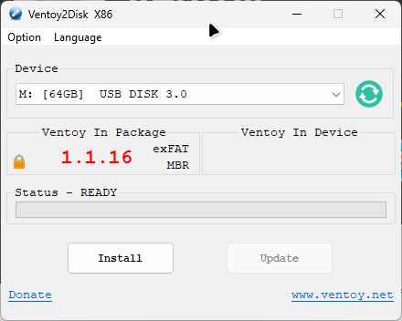
-
وقتی نصب تمام بشه، یه پیام موفقیتآمیز بهتون نشون میده و بعد از بستن پیام، میبینید که جلوی عبارت
Ventoy In Deviceورژن نصبشده روی فلش رو براتون مینویسه.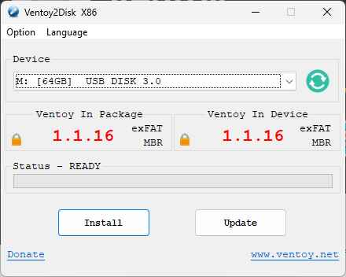
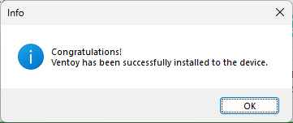
نکته دمدستی: توی منوی
Optionsبرنامه میتونید تنظیمات پارتیشنبندی (MBR/GPT) یاSecure Bootرو دستکاری کنید، ولی در ۹۰ درصد مواقع دست به چیزی نزنید و بذارید روی همان تنظیمات پیشفرض بمونه چون کاملاً جوابه. -
خب، بخش سخت کار تموم شد! حالا فلش شما آمادهست. کافیه فایل ISO پروکسماکس رو که اول کار دانلود کردید، کپی کنید و بندازید کف فلشتون؛ دقیقاً مثل یه فایل معمولی. تمام! فلش بوت ما حاضره.
تنظیمات بایوس، منوی بوت و پیکربندی هارد
یادتونه توی پیشنیازها گفتم پردازندهتون حتماً باید از قابلیت مجازیسازی پشتیبانی کنه؟ خب، اینجا دقیقاً همونجاییه که باید بریم سراغش.
اگه بخوام خیلی خلاصه بگم قدیمها چطوری بود، قبلاً برای اینکه شما کارهای مجازیسازی رو انجام بدی، تمام دستورات و پردازشها مجبور بودن به صورت نرمافزاری ترجمه بشن. این پروسه به شدت سنگین، کند و غیربهینه بود. بعداً شرکتهای بزرگ اومدن و تکنولوژیهای Intel VT-x (برای اینتل) و AMD-V (برای ایامدی) رو معرفی کردن. این قابلیتها یک خط مستقیم و بدون واسطه بین پردازنده فیزیکی و ماشین مجازی ایجاد میکنن تا سختافزار خودش کارها رو جلو ببره و سرعت پردازش پرواز کنه.
قدم اول: روشن کردن قابلیت مجازیسازی در بایوس
چون ما قراره سیستم رو به یک سرور مجازیسازی تبدیل کنیم، حتماً باید این آپشن رو از بایوس مادربورد روشن کنیم. برای این کار، سیستم رو روشن کنید و به محض دیدن لوگوی مادربورد، دکمهی DEL یا F2 رو (بسته به مدل سیستمتون) چند بار بزنید تا وارد محیط بایوس بشید.
توی مادربوردهای مختلف ممکنه منوها یکم فرق کنه، ولی معمولاً این گزینه توی تب Advanced هست و اسمهایی مثل Virtualization Technology، Intel Virtualization Technology یا SVM Mode (برای ایامدی) داره. پیداش کنید، بذاریدش روی حالت Enabled و در نهایت دکمهی F10 رو بزنید تا تنظیمات ذخیره و سیستم ریاستارت بشه.
قدم دوم: بوت کردن فلش ونتوی
حالا کابل شبکه (LAN) رو از مودم بزنید پشت کیس، فلشی که آماده کردیم رو هم وصل کنید و سیستم رو روشن کنید. اینبار به محض بالا اومدن لوگوی مادربورد، باید دکمهی «منوی بوت» (Boot Menu) رو بزنید تا مستقیم بریم سراغ انتخاب فلش.
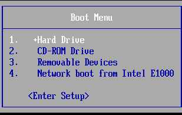
(دکمهی منوی بوت توی ۹۹ درصد مادربوردهای ایسوس F8، گیگابایت F12 و توی لپتاپها/مینیپیسیها معمولاً F12 یا F11 هست. اگه پیداش نکردید مدل مادربورد رو گوگل کنید).
اگه به هر دلیلی نتونستید منوی بوت یکبارمصرف رو باز کنید، اصلاً نگران نباشید؛ دوباره برید داخل خود بایوس، وارد تب Boot بشید و اولویت اول بوت (Boot Priority 1) رو بذارید روی فلشتون. با F10 ذخیره کنید تا سیستم اتوماتیک از روی فلش لود بشه.
قدم سوم: شروع پروسه نصب پروکسماکس
وقتی سیستم از روی فلش بالا بیاد، اول از همه محیط آشنای ونتوی رو میبینید.
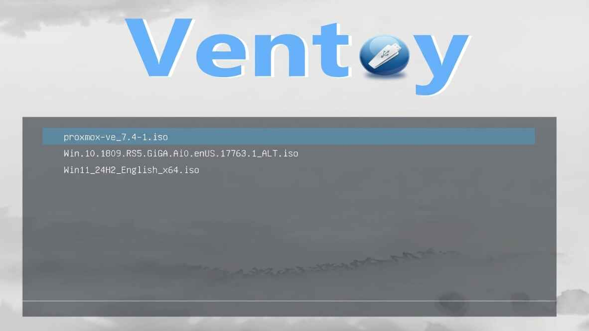
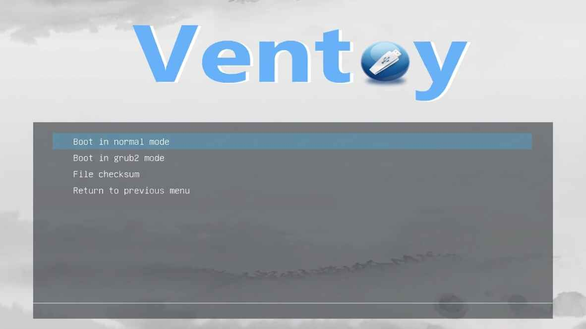
توی منوی بعدی هم گزینهی پیشفرض رو اینتر کنید تا سیستم شروع کنه به خوندن اطلاعات و بالا آوردن محیط نصب. بعد از چند لحظه، به صفحه اصلی و خوشآمدگویی پروکسماکس میرسید.

توی این صفحه گزینهی اول یعنی Install Proxmox VE رو انتخاب کنید. یکم بهش زمان بدید تا لود بشه و به صفحهی قوانین (EULA) برسه. اینجا روی دکمهی I Agree کلیک کنید تا وارد مراحل اصلی بشیم.
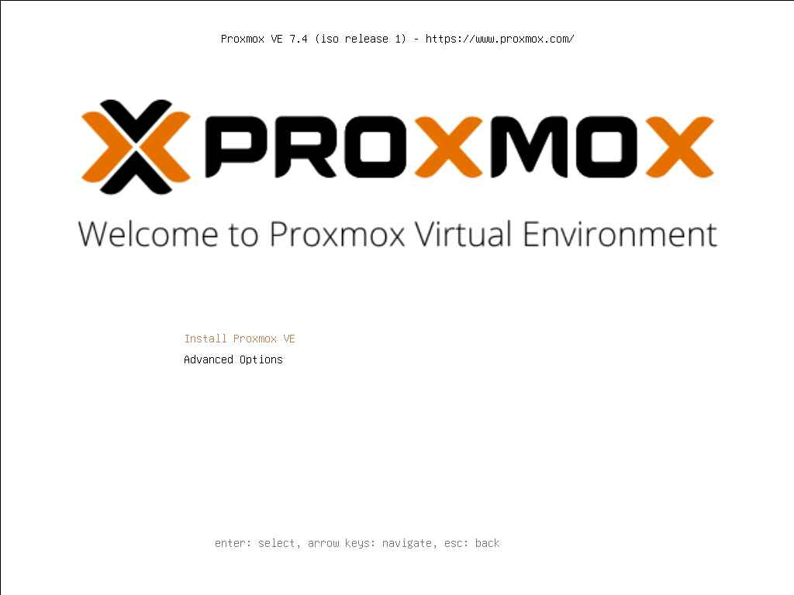
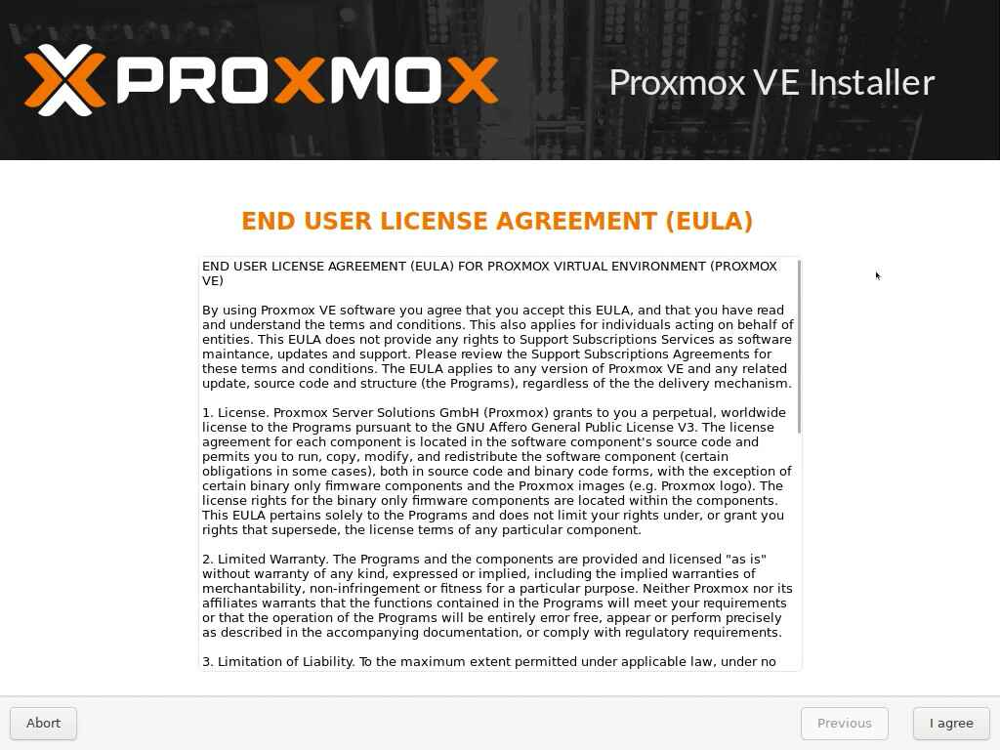
⚠️ یک نکته خیلی مهم: اگه توی این مرحله با این ارور اعصابخردکن مواجه شدید:
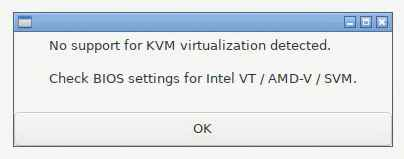
معنیش اینه که اون قابلیت مجازیسازی پردازنده (Intel VT-x یا AMD-V) رو که بالاتر توضیح دادم، توی بایوس روشن نکردید یا ذخیره نشده. سیستم رو ریاستارت کنید، اول اون رو فعال کنید و دوباره تا اینجا بیاید.
قدم چهارم: تنظیمات و پارتیشنبندی هارد
توی این صفحه، گزینهی Target Harddisk رو میبینید. اگه سیستمتون چند تا هارد داره، حواستون رو جمع کنید و اون هاردی که میخواید سیستمعامل روش نصب بشه رو انتخاب کنید.
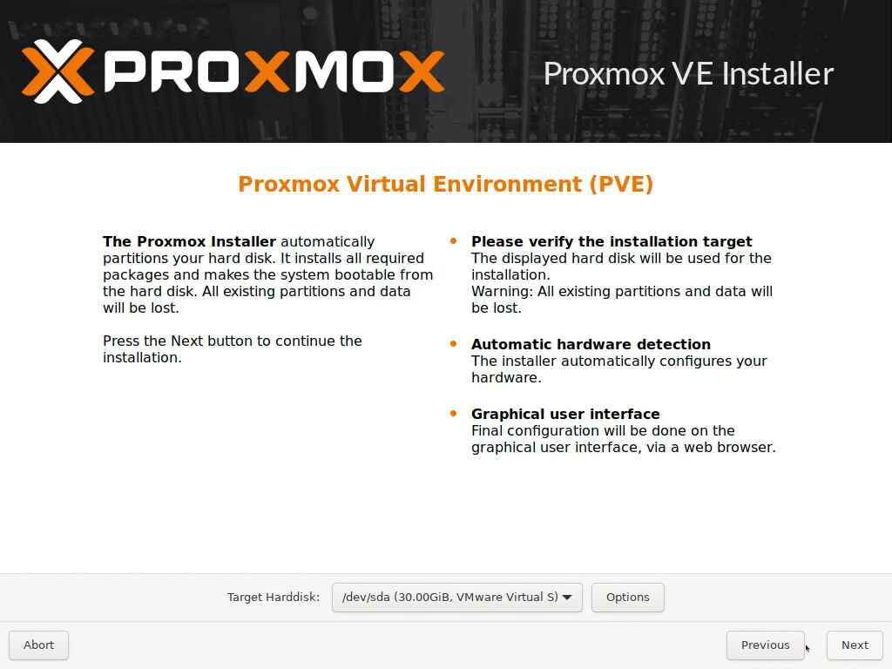
سمت راستِ هارد، یه دکمه به اسم Options هست. اگه روش کلیک کنید، یه منوی پیشرفته برای پارتیشنبندی براتون باز میشه که بد نیست با آپشنهاش آشنا بشید:
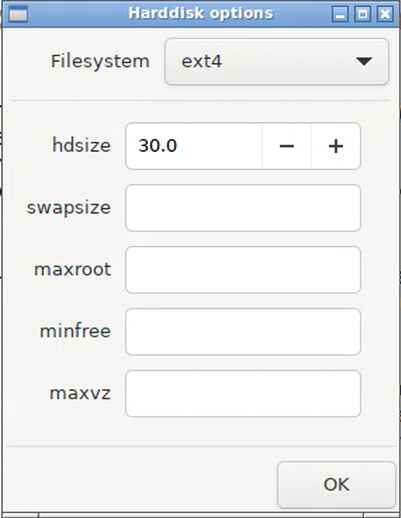
Filesystem: فرمت دیسک یا همون سیستمفایلی هست که پروکسماکس استفاده میکنه. به صورت دیفالت رویext4قرار داره که برای مصارف عادی فوقالعاده پایدار و عالیه. البته پروکسماکس از ساختارهای حرفهایتری مثلZFS(برای ستاپهای چند هارده و Raid) هم پشتیبانی میکنه.Hdsize: کل حجمی هست که میخواید به پروکسماکس اختصاص بدید. اگه کل حجم رو ننویسید، بقیهی هارد به صورت دستنخورده (Unallocated) میمونه تا بعداً دستی پارتیشنبندی کنید.Swapsize: یک فضای کمکی روی هارد هست که به کمک رم سیستمتون میاد. وقتی رم سیستم تا خرخره پر میشه، لینوکس دیتاهای کماستفاده رو میفرسته اینجا تا فضای رم برای کارهای مهمتر خالی بشه. معمولاً بین ۴ تا ۸ گیگ براش کافیه. (البته اگه مثل من هاردتون کلاً HDD باشه، سرعتش کمه و این بدبخت معجزه خاصی نمیتونه بکنه!).Minfree: حداقل فضای خالی که میخواید همیشه روی درایو روت (Root) دستنخورده و خالی بمونه.Maxvz: حداکثر فضایی که اجازه میدید برای ذخیره و نگهداری فایلِ خودِ ماشینهای مجازی (VMها) و کانتینرها مصرف بشه.
اگه کار خاصی ندارید و میخواید کل هارد مصرف بشه، اصلاً دست به این گزینهها نزنید و بذارید روی حالت پیشفرض بمونه تا خودش اتوماتیک همه چیز رو بهینهترین حالت بچینه و دکمهی Next رو بزنید.
قدم پنجم: تنظیم رمز عبور سرور و ایمیل
در مرحلهی بعد، به صفحهی تنظیم پسورد و ایمیل میرسید.
اینجا یک پسورد محکم و حسابشده برای سیستم در نظر بگیرید (یوزرتون به صورت پیشفرض root هست). در قسمت ایمیل هم یک ایمیل معتبر و فعال وارد کنید تا در آینده اگه سیستم گزارش یا هشداری فرستاد، بتونید دریافتش کنید. (من چون داشتم این پارت رو برای آموزش نصب میکردم، یه ایمیل دِمو و رندوم زدم).
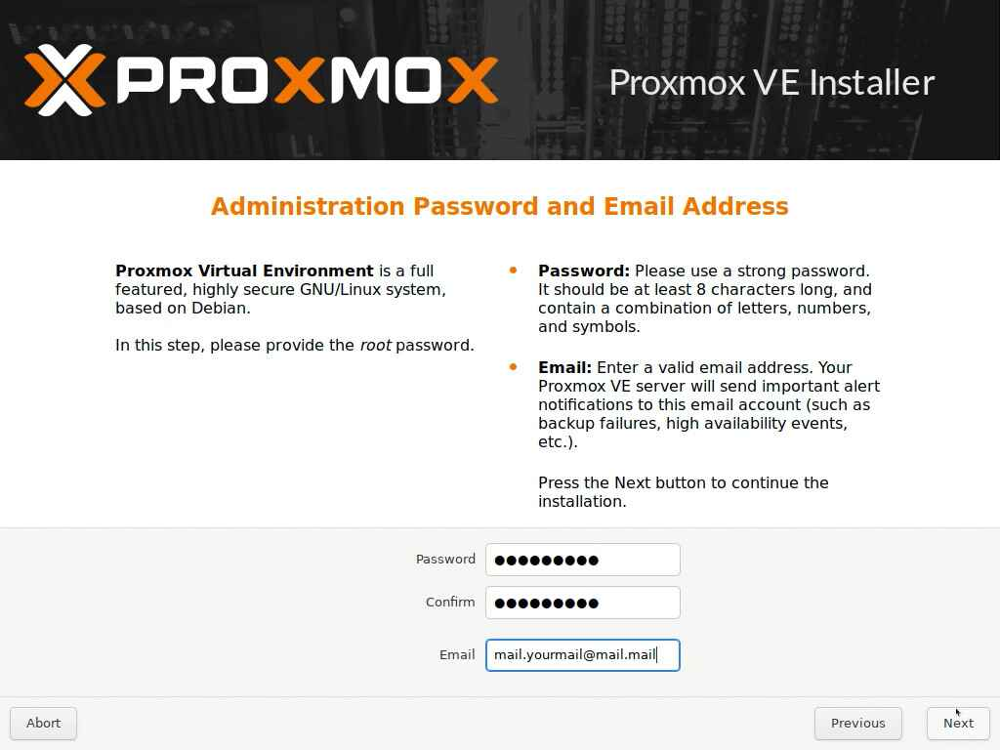
قدم ششم: تنظیمات شبکه (Network)
صفحهی بعدی مربوط به پیکربندی کارت شبکه و آیپورت سرور شماست:
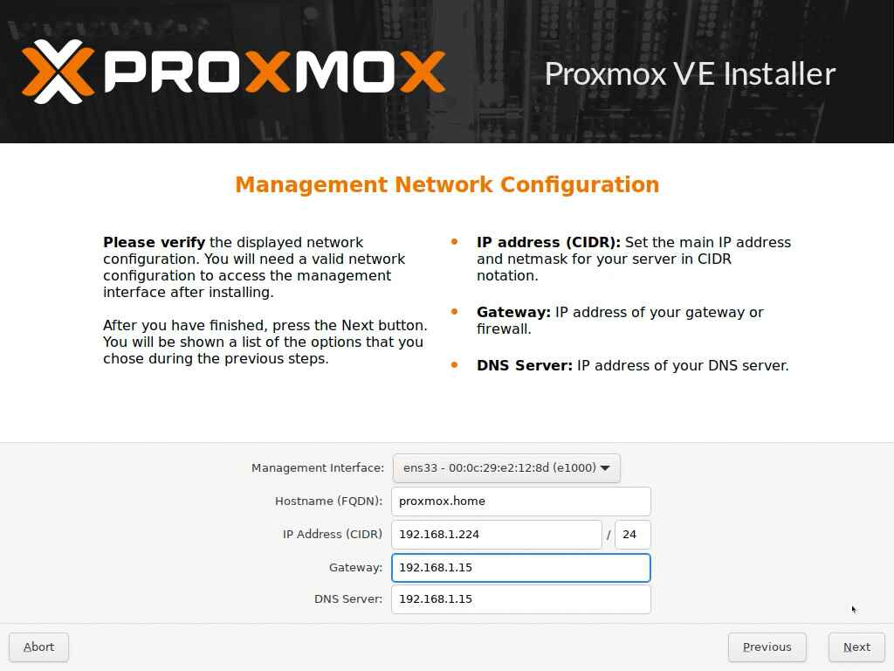
Management Interface: در گزینهی اول، باید کارت شبکه اصلی کیس رو انتخاب کنید (اگر سیستم فقط یک پورت LAN داشته باشه خودش خودکار انتخاب میشه).Hostname: اینجا نام سرور رو در شبکه داخلی مشخص میکنید. به زبان ساده، اسمیه که سرور باهاش شناخته میشه تا بعداً نیاز نباشه همش آیپی تایپ کنید. حواستون باشه به هیچ وجه از دامنههای واقعی و پابلیک استفاده نکنید؛ ترجیحاً یک اسم ساده بنویسید و تهشlocal.بذارید (مثلاًpve.local). از کاراکترهای خاص استفاده نکنید؛ فقط حروف، اعداد و نقطه مجازه.IP Address: آدرس آیپی اختصاصی این سرور هست. خود پروکسماکس معمولاً بر اساس DHCP مودم یه آیپی پیشنهاد میده، ولی ترجیحاً یک آیپی ثابت (Static) خارج از رِنجِ بقیه دستگاههای خونه بهش بدید تا بعداً با خاموش روشن شدن مودم، آیپی سرورتون عوض نشه.Gateway: اینجا باید آدرس آیپی مودمتون رو وارد کنید تا سرور پروکسماکس بتونه از طریق اون به اینترنت وصل بشه و پکیجها رو دانلود کنه.DNS Server: آدرس دیاناس سرور رو مشخص کنید. میتونید آیپی مودم رو بذارید یا از دیاناسهای معروفی مثل1.1.1.1یا8.8.8.8استفاده کنید.
دکمهی Next رو بزنید تا به صفحهی خلاصه (Summary) برسید. یک بار همهچیز رو چک کنید و اگه همهچیز ردیف بود، تایید کنید تا پروسه نصب شروع بشه.
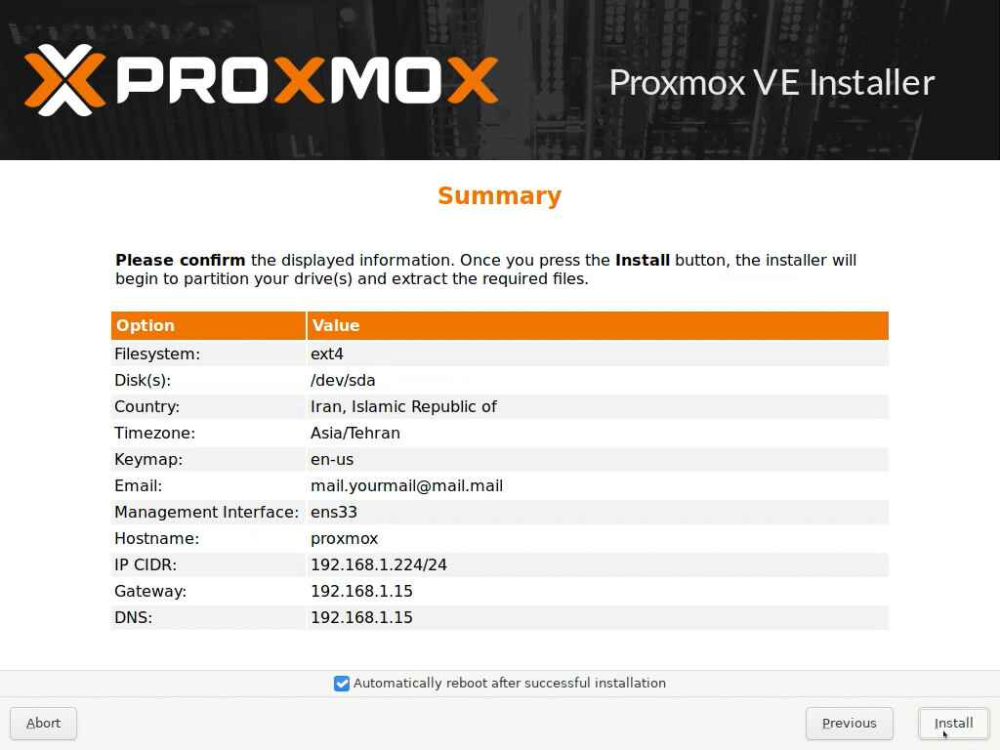
حالا وقتشه یه چای بریزید و منتظر بمونید تا نصب کامل بشه. بسته به سرعت سختافزار و هارد سیستمتون، این مرحله ممکنه یکم زمان ببره.
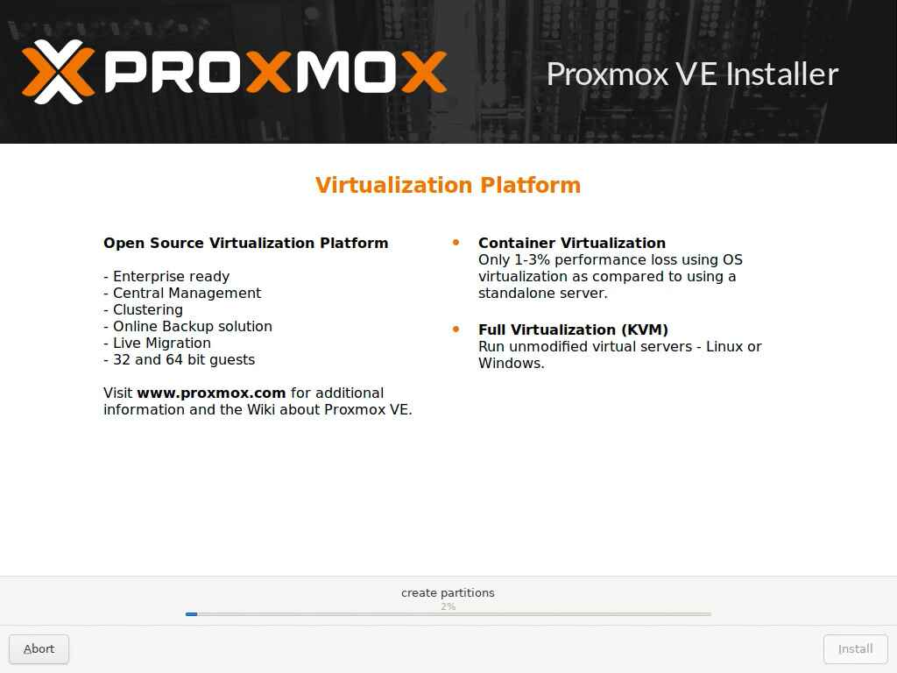
بعد تموم شدن نصب، سیستم به صورت خودکار ریاستارت میشه و فلش رو میتونید از کیس جدا کنید.
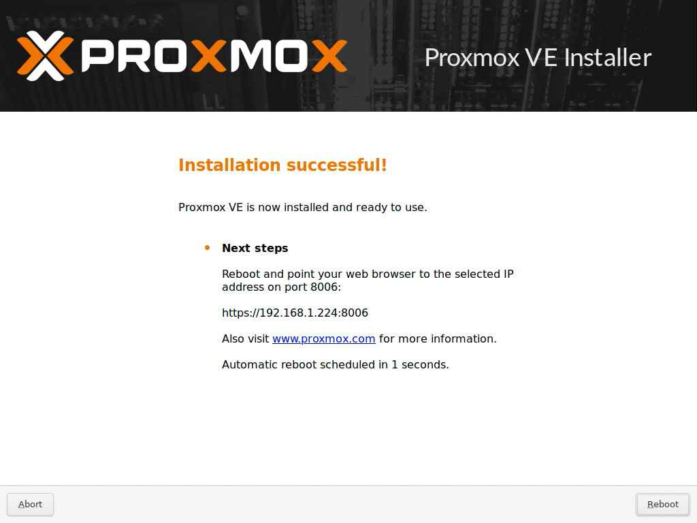
قدم هفتم: ورود به محیط وب (Web UI)
وقتی سیستم بالا بیاد، با یک صفحه مشکی (ترمینال) مواجه میشید که کارش تموم شده و یک آدرس وب با پورت 8006 بهتون نشون میده. این یعنی سرور آمادهی استفادهست. می تونید مانیتور هم ول کنید بره دیگه کاری باهاش نداریم.
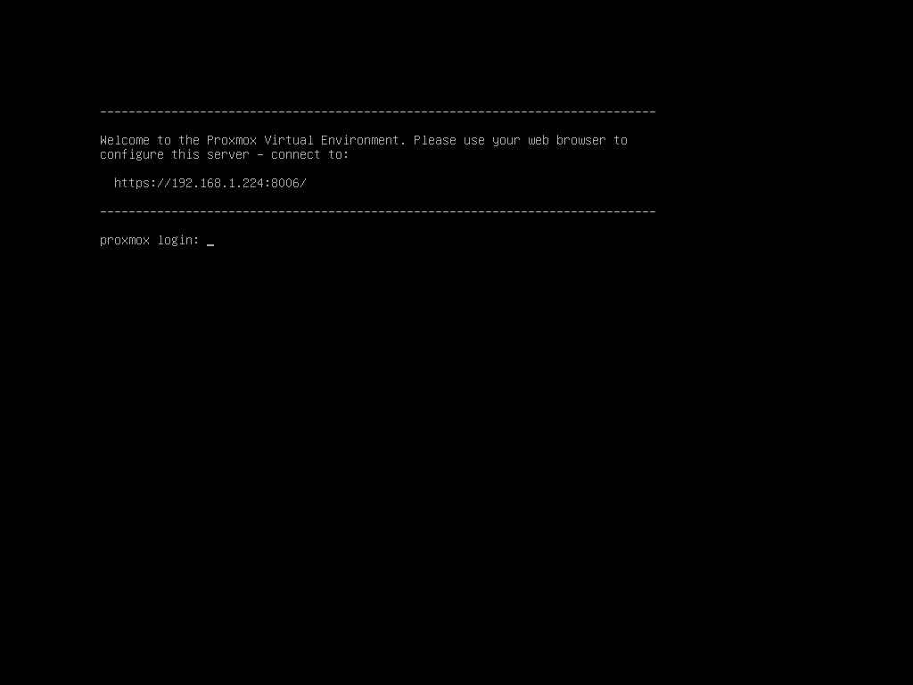
حالا پشت سیستم اصلی یا لپتاپتون بشینید، مرورگر رو باز کنید و دقیقاً همون آدرسی که روی مانیتور سرور نوشته شده رو وارد کنید (مثلاً https://192.168.1.230:8006).
موقع ورود احتمالاً با ارور امنیتی (Not Private یا Security Error) مرورگر مواجه میشید. اصلاً نگران نباشید؛ چون گواهی SSL سرور محلیه این اتفاق میافته. کافیه روی دکمهی Advanced بزنید و گزینهی Proceed to... رو انتخاب کنید تا وارد صفحه لاگین بشید.
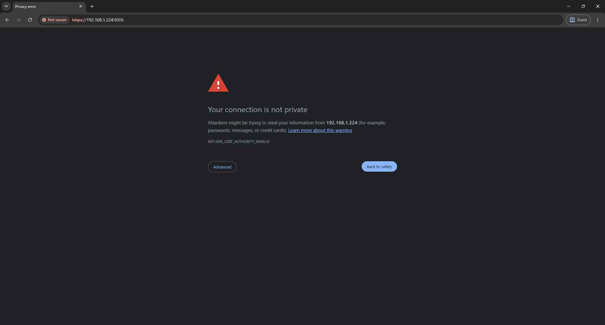
اینجا یوزرنیم رو root بذارید و پسوردی که موقع نصب ست کردید رو وارد کنید.
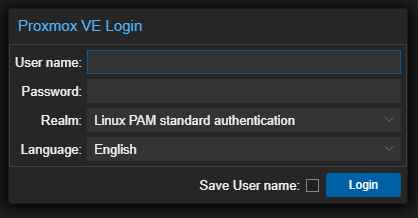
به محض ورود، یک ارور پاپآپ با مضمون No Valid Subscription میبینید. پروکسماکس کاملاً اوپنسورس و رایگانه و این ارور فقط داره میگه شما اشتراک پشتیبانی تجاری ندارید. خیلی راحت روی OK بزنید تا بسته بشه.
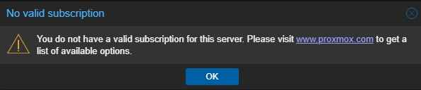
تبریک میگم! شما با موفقیت وارد داشبورد مدیریتی سرور پروکسماکس خودتون شدید. 🥳💻
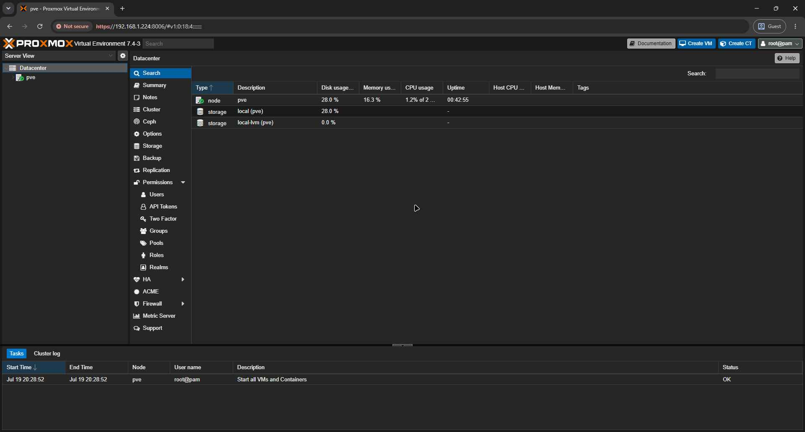
قدم آخر و مهم: فعالسازی مخزن رایگان (No-Subscription)
اگر همین الان تو بخش آپدیت برید و دکمهی Refresh رو بزنید، با ارور مواجه میشید. چرا؟ چون پروکسماکس به صورت پیشفرض مخازن آپدیتش رو روی نسخه تجاری (Enterprise) تنظیم کرده که نیاز به لایسنس پولی داره. برای اینکه بتونیم سرور رو به صورت رایگان آپدیت کنیم، باید این مسیر رو بریم:
-
طبق شمارههای داخل عکس، از منوی سمت چپ روی «نود سرور خودتون» (زیر مجموعه
Datacenter) کلیک کنید. برید به بخشUpdatesو گزینهیRepositoriesرو انتخاب کنید. روی خطِ ریپازیتوریpve-enterpriseکلیک کنید تا انتخاب بشه و از منوی بالا دکمهیDisableرو بزنید تا خاموش بشه.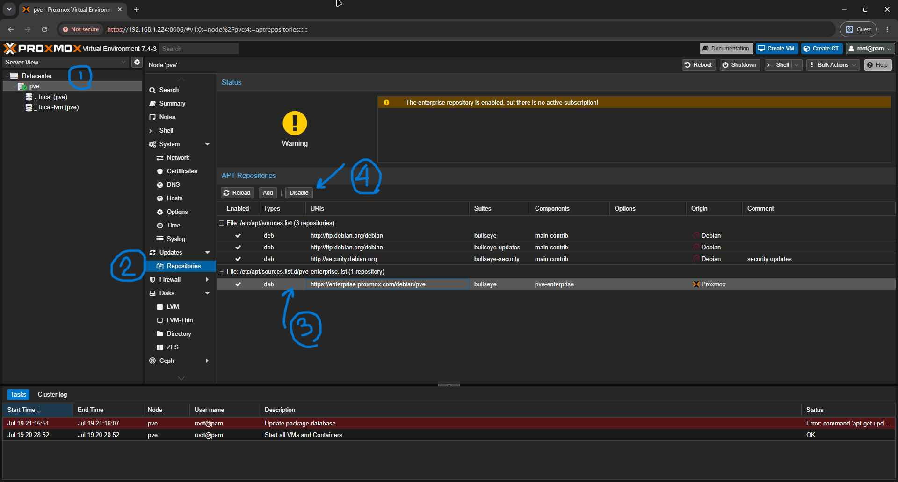
-
حالا برای اضافه کردن مخزن رایگان، همانجا روی دکمهی
Addکلیک کنید. (اگر دوباره پاپآپ سابسکریپشن اومد اوکی کنید). توی پنجره باز شده، از منوی کشویی گزینهیNo-Subscriptionرو انتخاب کنید و دکمهیAddرو بزنید.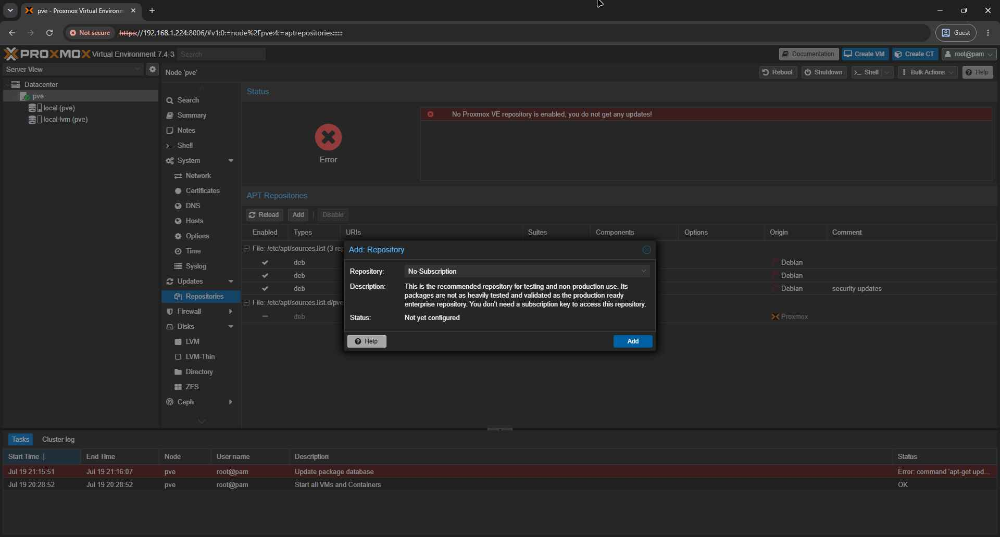
بعد از انجام این کار، ساختار ریپازیتوریهای شما باید دقیقاً شبیه به این تصویر شده باشه:
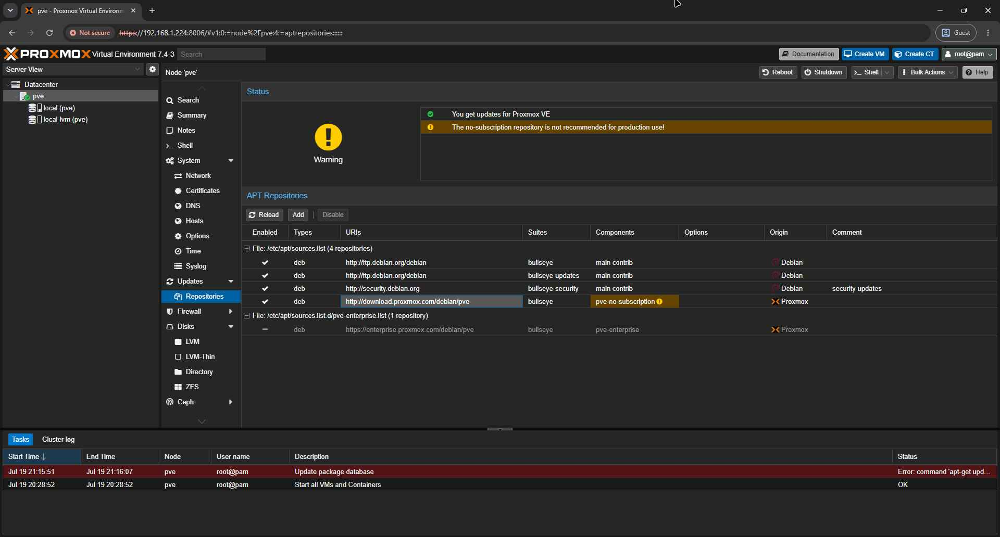
حالا اگه دوباره به تب Updates برگردید و دکمهی Refresh رو بزنید، میبینید که بدون هیچ اروری تمام پکیجها لود میشن و سرور شما آمادهی آپدیت شدنه!
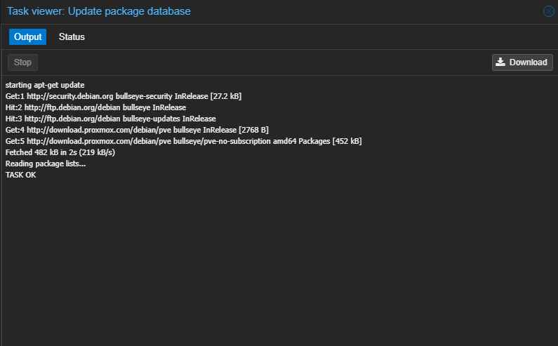
شاید براتون سوال بشه فرق این مخازن چیه؟ مخزن Enterprise مخصوص شرکتها و دیتاسنترهای حساسه که آپدیتها رو بعد از تستهای فوقالعاده طولانی دریافت میکنن تا هیچ قطعی رخ نده. اما در مخزن No-Subscription، پکیجها به محض انتشار و بعد از یک تست اولیه در اختیار ما قرار میگیرن که برای استفادههای شخصی و آموزشی کاملاً پایدار، بینقص و عالی هستن.
جمعبندی
دمتون گرم که تا اینجای آموزش همراه بودید. حالا ما یک هایپروایزر Bare-Metal خفن گوشه اتاق داریم. از اینجا به بعد میتونیم با خیال راحت هر سیستمعامل، لینوکس، ویندوز یا سرویسی که دلمون میخواد رو روش بالا بیاریم، تست کنیم، یاد بگیریم و مطمئن باشیم که حتی اگه کل سیستم مجازی رو هم با یک دستور اشتباه هوا کنیم، با یک کلیک و قابلیت Snapshot میتونیم برگردیم به چند ثانیه قبل از خرابکاری!
توی بخشهای بعدی، می ریم که روتر OpenWRT رو باهام بالا بیاریم. صفا کنید! 🔥